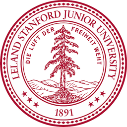

Dunyodagi eng yaxshi 10 universitet
Bu sahifada QS World University Rankings 2027 (2026-yil 18-iyunda e’lon qilingan) bo‘yicha dunyodagi eng yaxshi 10 universitet berilgan. Ma’lumotlar universitetlarning rasmiy qabul saytlaridan olindi (2026-yil noyabr). Boshqa reytinglar (masalan, THE 2027, unda Oxford 1-o‘rinda) universitetlarni boshqacha tartibda joylashtiradi.
Muddatlar, summalar va qoidalar har yili o‘zgaradi. Ariza topshirishdan oldin universitetning rasmiy saytini tekshiring.
 1MIT — Massachusetts Institute of TechnologyCambridge, Massachusetts, AQSh · 1861-yilda asos solingan
1MIT — Massachusetts Institute of TechnologyCambridge, Massachusetts, AQSh · 1861-yilda asos solingan
QS 2027: 1-o‘rin
Qanday ariza topshiriladi
PlatformaMIT application portal
Ariza to‘lovi$75
Muddatlar
Erta bosqich 01.11Oddiy bosqich 04.01
Testlar va talablar
- SAT yoki ACT majburiy
- 2 ta o‘qituvchi tavsiyasi majburiy; maslahatchi xati majburiy emas
- Imkon bo‘lsa, Educational Counselor suhbat taklif qilishi mumkin; bo‘lmasa, bu arizaga ta’sir qilmaydi
Ingliz tili
- Ayrim ona tili ingliz bo‘lmagan o‘quvchilar uchun qat’iy tavsiya etiladi, hamma uchun majburiy emas
Pul va yordam
- Yordam ehtiyojga asoslanadi; MIT aniqlangan ehtiyojning 100% ini qoplashini aytadi. Yordam arizasi alohida: 30.11 (erta) yoki 15.02 (oddiy)
Bilish foydali
- Bir o‘quv yili uchun faqat bitta ariza; Early Action da rad etilsangiz, Regular Action ga qayta topshirib bo‘lmaydi
 2Imperial College LondonLondon, Buyuk Britaniya · 1907-yilda asos solingan
2Imperial College LondonLondon, Buyuk Britaniya · 1907-yilda asos solingan
QS 2027: 2-o‘rin
Qanday ariza topshiriladi
PlatformaUCAS
Testlar va talablar
- Talablar kurs bo‘yicha farq qiladi; o‘z davlatingiz bo‘yicha rasmiy saytdan tekshiring
Ingliz tili
- Daraja kursga qarab farq qiladi; IELTS natijasi 2 yil amal qiladi
Pul va yordam
- 2027 yil qabul uchun Imperial Inspires stipendiyalari bor; batafsil rasmiy saytda

2Stanford UniversityStanford, California, AQSh · 1885-yilda asos solingan
QS 2027: 2-o‘rin
Qanday ariza topshiriladi
PlatformaCommon App
Ariza to‘lovi$100
Muddatlar
Erta bosqich 15.10 / 01.11Oddiy bosqich 05.12 / 05.01
Testlar va talablar
- SAT yoki ACT majburiy
- 2 ta o‘qituvchi tavsiyasi, maslahatchi xati va School Report
Ingliz tili
- Majburiy emas, natijani o‘zingiz ko‘rsatishingiz mumkin; lekin ingliz tilini erkin bilish shart
Pul va yordam
- Xalqaro o‘quvchilar uchun need-blind emas: yordam so‘rash qabulga ta’sir qiladi. Qabul qilinganlarning to‘liq ehtiyojini qoplaydi; merit stipendiyalari yo‘q (sportchilar uchun cheklangan)
Bilish foydali
- Yarim yillik transkript 15.02 gacha; javob berish muddati 01.05
 4University of OxfordOxford, Buyuk Britaniya · Taxminan 1096-yildan dars beriladi
4University of OxfordOxford, Buyuk Britaniya · Taxminan 1096-yildan dars beriladi
QS 2027: 4-o‘rin
Qanday ariza topshiriladi
PlatformaUCAS
Muddatlar
UCAS 15.10
Testlar va talablar
- Testlar va suhbat kursga qarab farq qiladi; saralangan abituriyentlar bilan suhbat o‘tkaziladi
Ingliz tili
- IELTS Academic tavsiya etiladi; IELTS Online va IELTS General qabul qilinmaydi
Pul va yordam
- Xalqaro o‘quvchi o‘rin tasdiqlanguncha o‘qish va yashash xarajatlarini qanday qoplashini ko‘rsatishi kerak; to‘lov kursga qarab farq qiladi
Bilish foydali
- Yiliga taxminan 20 000 ta ariza, taxminan 3 250 ta o‘rin; bakalavrlarning 20% i xalqaro
 5Harvard UniversityCambridge, Massachusetts, AQSh · 1636-yilda asos solingan
5Harvard UniversityCambridge, Massachusetts, AQSh · 1636-yilda asos solingan
QS 2027: 5-o‘rin
Qanday ariza topshiriladi
PlatformaCommon App
Ariza to‘lovi$95
Muddatlar
Erta bosqich 01.11Oddiy bosqich 01.01
Testlar va talablar
- SAT yoki ACT majburiy (istisno hollarda AP, IB yoki milliy imtihon natijalari)
Ingliz tili
- Majburiy emas, lekin natijani topshirishingiz mumkin
Pul va yordam
- Yordam barcha fuqarolar uchun bir xil va ehtiyojga asoslangan; Harvard aniqlangan ehtiyojni qoplaydi. Qabul qarori yordam so‘rashingizga bog‘liq emas (xorijiy fuqarolar uchun ham)
Bilish foydali
- Test natijasini o‘zingiz ko‘rsatishingiz mumkin; o‘qishga kelganlardan rasmiy natija so‘raladi
 6University of CambridgeCambridge, Buyuk Britaniya · 1209-yilda asos solingan
6University of CambridgeCambridge, Buyuk Britaniya · 1209-yilda asos solingan
QS 2027: 6-o‘rin
Qanday ariza topshiriladi
PlatformaUCAS + My Cambridge Application
Muddatlar
UCAS 15.10.2026My Cambridge Application 22.10.2026Transkript (xalqaro abituriyentlar) 22.10.2026
Testlar va talablar
- Ayrim kurslar uchun kirish testi kerak (UCAT, LNAT, ESAT, TMUA); testga UCAS muddatidan oldin ro‘yxatdan o‘tish kerak bo‘lishi mumkin
Ingliz tili
- IELTS Academic: odatda umumiy 7,5, har bir bo‘limda odatda 7,0 dan kam emas
Pul va yordam
- To‘lov kursga qarab farq qiladi va o‘qish davomida o‘zgarmaydi; xorijiy tarif to‘lovchilarga ustunlik berilmaydi
Bilish foydali
- Xalqaro va Britaniyalik abituriyentlar uchun muddat bir xil; oldingi xalqaro suhbat muddati yo‘q
 7California Institute of Technology (Caltech)Pasadena, California, AQSh · 1891-yilda asos solingan
7California Institute of Technology (Caltech)Pasadena, California, AQSh · 1891-yilda asos solingan
QS 2027: 7-o‘rin
Qanday ariza topshiriladi
PlatformaCommon App / QuestBridge
Muddatlar
Erta bosqich 01.11.2026Oddiy bosqich 04.01.2027Javob berish muddati 01.05.2027
Testlar va talablar
- SAT yoki ACT majburiy; bo‘lsa AP yoki IB natijalari
Ingliz tili
- Majburiy (ingliz tilida o‘qimagan bo‘lsangiz): IELTS 7 (har bir bo‘limda 7) yoki Duolingo 130 (har bir bo‘limda 130)
Pul va yordam
- Xalqaro abituriyentlar uchun need-aware: yordam so‘rash qarorga ta’sir qilishi mumkin. Qabul qilinganlarning to‘liq ehtiyojini qoplaydi. Yordamni ariza topshirishda so‘rash kerak
Bilish foydali
- Qaror: erta bosqich — dekabr o‘rtasi, oddiy bosqich — mart o‘rtasi; javob muddati 01.05.2027
 8ETH ZurichZurich, Shveytsariya · 1855-yilda asos solingan
8ETH ZurichZurich, Shveytsariya · 1855-yilda asos solingan
QS 2027: 8-o‘rin
Qanday ariza topshiriladi
PlatformaETH online application
Muddatlar
Ariza muddati 31.03
Testlar va talablar
- Ko‘p xorijiy attestatlar uchun ETH kirish imtihonini topshirish kerak (attestatga bog‘liq)
Ingliz tili
- Nemis tili talablari ariza muddatigacha bajarilishi kerak
Pul va yordam
- 2025 yil kuz semestridan xorijiy attestat bilan kiruvchilar uchun CHF 2 190 / semestr (avval CHF 730 edi)
Bilish foydali
- Bakalavrda o‘qish faqat kuz semestridan boshlanadi
 8UCL (University College London)London, Buyuk Britaniya · 1826-yilda asos solingan
8UCL (University College London)London, Buyuk Britaniya · 1826-yilda asos solingan
QS 2027: 8-o‘rin
Qanday ariza topshiriladi
PlatformaUCAS
Testlar va talablar
- Takliflar 3 ta A-level asosida (standart taklif kursga qarab A*A*A dan ABB gacha); boshqa davlatlar attestatlari ekvivalentlik bo‘yicha tekshiriladi
Ingliz tili
- 5 ta daraja bor, kerakli darajani kurs sahifasidan tekshiring; IELTS One Skill Retake qabul qilinmaydi
Pul va yordam
- Xalqaro o‘qish to‘lovi va stipendiyalar rasmiy saytda; kursga qarab farq qiladi
Bilish foydali
- 2025 yil qabul uchun UCAS orqali taxminan 91 000 ta ariza kelgan
 10National University of Singapore (NUS)Singapore, Singapur · 1905-yilda asos solingan
10National University of Singapore (NUS)Singapore, Singapur · 1905-yilda asos solingan
QS 2027: 10-o‘rin
Qanday ariza topshiriladi
PlatformaNUS Applicant Portal
Ariza to‘loviS$20
Muddatlar
Ariza davri (o‘tgan yil) 03.12.2025 – 23.02.2026
Testlar va talablar
- SAT, AP yoki ACT natijalari bo‘lsa topshiriladi; talablar yo‘nalishga qarab farq qiladi
Ingliz tili
- IELTS yoki TOEFL natijasi bo‘lsa topshiriladi; ayrim yo‘nalishlar yuqori daraja talab qiladi
Pul va yordam
- NUS International Undergraduate Scholarship: nomzodlar qabul arizasi orqali ko‘rib chiqiladi
Bilish foydali
- Qabul kompleks: o‘qish natijalari, qiziqish va qobiliyat hisobga olinadi